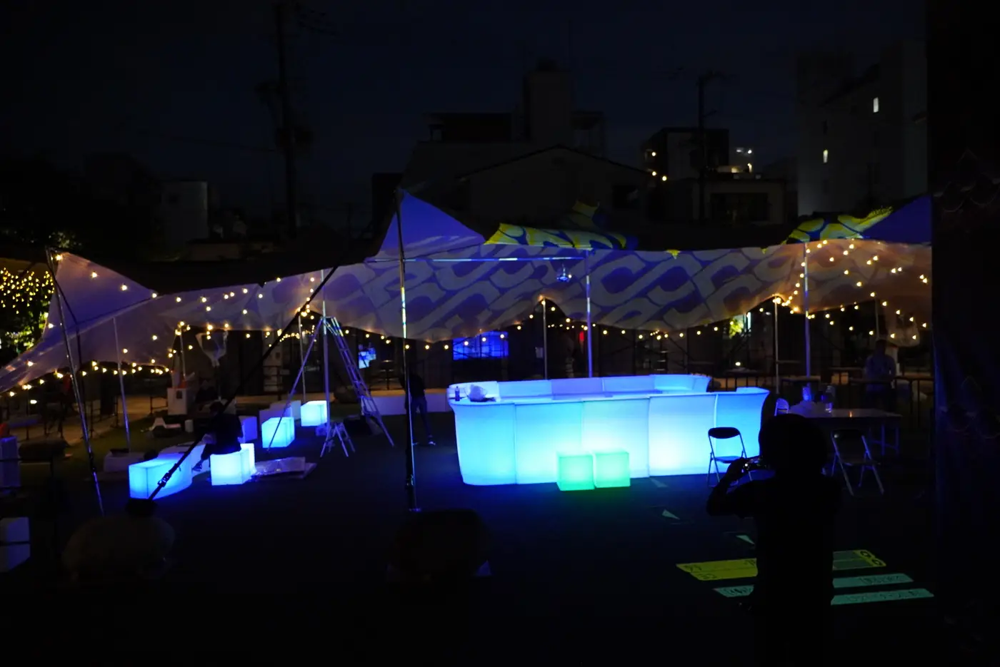
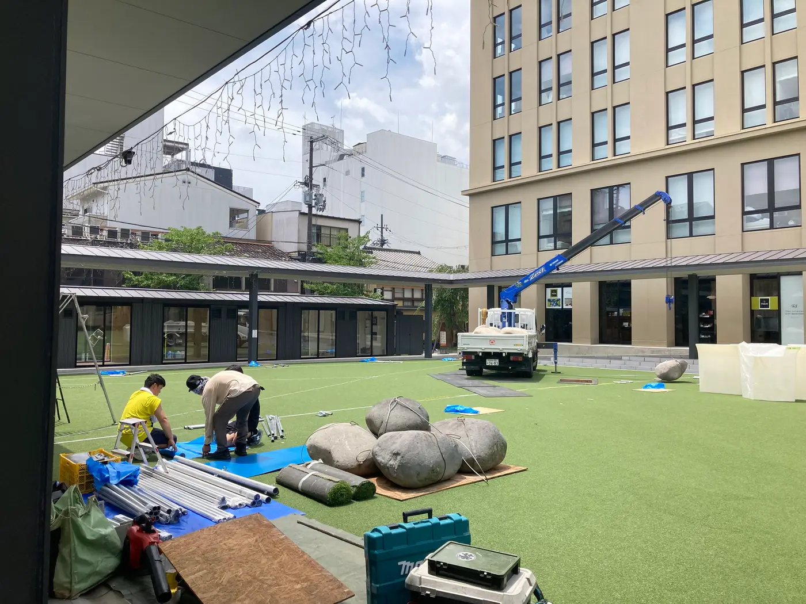
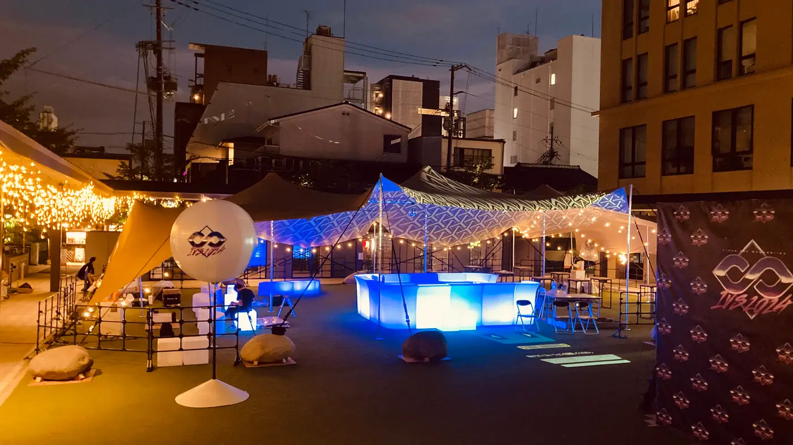
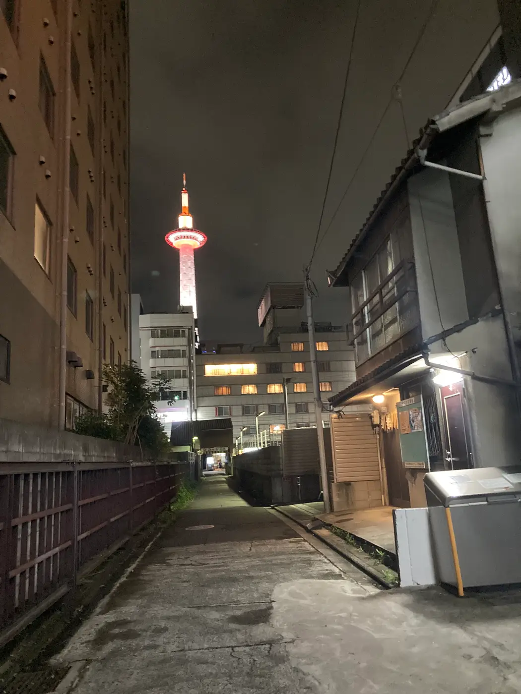

OVERVIEW
事例のまとめ
| イベント | IVS アフターパーティー（2024年） |
|---|---|
| 場所 | 京都府（市街地の芝生の会場） |
| テント | L サイズ（10m×20m）1張り |
| 色 | サンドキャメル |
| 使い方 | 日よけ・雨よけ、バーカウンターと客席の屋根、映像の投影 |
真ん中にバーカウンター、両側に客席
テントの真ん中に光るバーカウンターを置き、両側を客席にしました。屋根の下にパーティーの中心ができるので、ゲストが自然に集まり、雨が降っても会が止まりません。
トラックが入れない会場で、川石をおもりに
会場は京都の街なか。道の事情で、資材を運ぶトラックが会場まで入れませんでした。そこで、テントを固定するおもりに川石を使いました。限られた条件の中でも、安全に張るための方法を現場で考えます。
テントに、スポンサー名を映す
夜は、テントの布にプロジェクションマッピング（映像を映す演出）でスポンサー名などを映しました。ストレッチテントの布は、それ自体が大きなスクリーンになります。屋根でありながら、パーティーの演出の主役にもなりました。
PHOTOS




FOR YOUR EVENT
こんなイベントにおすすめです。
- カンファレンスや展示会のアフターパーティー
- 街なか・ビルの合間の限られた会場
- 映像や照明の演出をしたいイベント
会場の広さや地面、使い方をお聞かせください。似た条件の事例をもとに、テントの大きさと張り方をご提案します。あわせて サイズ・収容人数、設営の流れ、ほかの施工事例 もご覧ください。